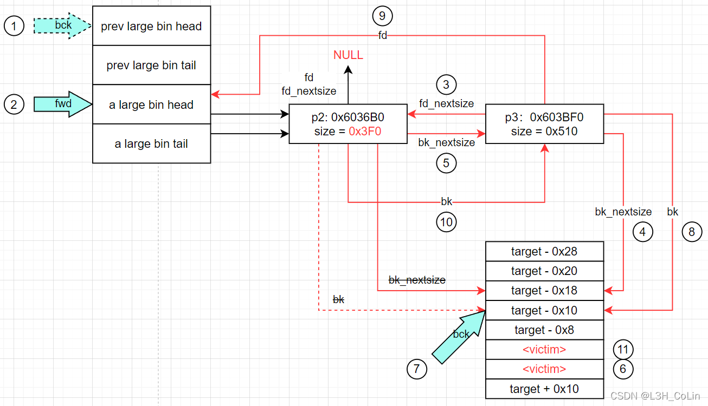

how2heap下载网址: 传送门
Glibc源码查看网址：传送门
参考书籍：CTF竞赛权威指南-pwn篇
测试环境：Ubuntu 18.04
Glibc 版本：Ubuntu GLIBC 2.27-3ubuntu1.5
按照顺序，本文将分析glibc 2.27文件夹下的第9~16个源码，重点对源码进行分析与解读。一些2.23版本中出现过的漏洞将不再赘述。
如果本文的分析有任何错漏之处，还请各位读者不吝赐教，不胜感激。
9. large_bin_attack
简单看了一下源码，和2.23版本的没有什么区别，有关于large bin的链入过程已经在上一篇文章详细推演过了，这里解释一下large bin attack的大致操作流程。
Step 1: 构造堆环境
在分配3块大内存后释放前2块之后，unsorted bin中有2个chunk。
之后，会分配一个0x100大小的堆块，由于last_remainder始终为空，因此这会导致两个unsorted bin中的chunk首先被链入到large bins中。
到此为止，_int_malloc函数仍然没有找到能够分配给用户的chunk，那么下一步就是在large bins中寻找并切割chunk，这也是last_remainder从NULL被赋值为一个有效地址的唯一方式。下面就来具体分析一下这个子过程。
切割large bins chunk返回的过程
下面是这个子过程的源码，在第4步大循环中执行。第4步大循环首先进入一个while小循环将unsorted bin整理完毕，然后再向下执行，到达这个子过程。中间跳过了一个检查是否分配的是大chunk的过程。
1 | ++idx; |
在一开始，有block，map，bit这三个变量的赋值，这三个变量是干嘛的呢？注意在2.27的malloc_state中，第8个成员，也就是bins下面一个成员是一个叫binmap的东西，这个成员通过比特位来记录哪些bins当前存有chunk，哪些没有chunk，这是为了在后面查找chunk的时候不用每一个bin都过去检查是否为空。从下面的定义中可以看出，binmap是一个unsorted int类型，一个整型变量可以保存32个bin的“是否为空”的信息。那么一开始的block = idx2block (idx);就是为了找到对应索引（idx）的比特位信息在哪个索引中。map = av->binmap[block];则定位索引对应的无符号整型变量，bit = idx2bit (idx);则定位到该idx的比特位，从后面这句while ((bit & map) == 0)可以看出，bit应该是诸如0x100，0x10000，0x1000000这样的数，与map做按位与处理判断某位上是否为1。
1 |
|
首先判断当前map中是否有满足请求大小的chunk，如果没有则查找下一个map，直至找到为止。如果都没有找到则通过top chunk分配。外层if判断条件为bit > map || bit == 0，即当前map中没有满足的chunk或bit溢出，则查找后面的map，后面的map只要找到一个不为0的就说明有满足的chunk，就选择第一个非零的map。退出循环后while（line 4000）的条件为(bit & map) == 0，即如果找到了chunk就确认bit并返回。（注意：执行到这一步时一定可以找到chunk，因为map非0且bit从1开始查找，所以才会有循环中的assert断言）
找到有chunk的bin之后，选择最后一个chunk。后面再次检查这个bin是否为空（line 4011），如果为空说明前面的比特位有误，将其清除之后重新循环判断。
如果确认有chunk存在，选择最后一个chunk并获取其size，并断言这个size大于请求的size（line 4023）。计算切割该chunk后剩下的大小remainder_size。然后unlink将该chunk从bins中安全取出（line 4028）。
后面判断remainder_size是否小于最小chunk的size（0x20）。如果是则干脆将整个chunk全部分配出去，结束。（line 4031）
如果不是，将获取分割后的chunk的头部地址（line 4041），并将这个chunk插入到unsorted bin的头指针之后，也就是第一的位置（line 4049 ~ 4052）。之后如果申请大小在small bins范围则设置last_remainder为该chunk（line 4055），如果是large bin大小的chunk则将fd_nextsize和bk_nextsize置空（line 4057 ~ 4061）。之后设置一些标志位就可以返回了。
根据上面的分析结果，可以知道，在两个chunk被链入到large bins之后，会选择较小的那个chunk，即p1进行切割，剩余大小为0x3f0。因此此次malloc之后将会有p1的残余留在unsorted bin，p2进入large bins。
1 | Free chunk (unsortedbin) | PREV_INUSE |
后面释放p3，unsorted bin中就链入了两个chunk。
Step 2: 修改p2的4个指针
要修改的栈区地址为0x7fffffffe260~0x7fffffffe270。将p2的指针修改为如下所示：
1 | 00:0000│ 0x6036b0 ◂— 0x0 |
Step 3: malloc(0x90)
之后，一场好戏的开始只需要malloc一个0x100的chunk。让我们凑近点看看，下面到底会发生什么。
首先到达判断是否切割last_remainder。注意：切割last_remainder的条件还是比较苛刻的，需要4个条件同时满足：(1) last_remainder存在，(2) 要分配的大小在small bins范围，(3) 这个last_remainder是unsorted bin里面唯一一个chunk，(4) 这个last_remainder的大小要大于(申请大小+最小chunk的大小【0x20】)。很明显这里第3个条件不满足，因为此时unsorted bin中不仅有p1的残余还有p3。首先将p1放入small bins（此时p1的size=0x3f0，正好是最后一个small bins存放的大小），然后将p3放入large bins，与p2应该放在一个bins中。
将p2放入large bins的同时会将栈区的内容修改掉，步骤如下图所示，与上一篇文章的house_of_storm的流程实际上是相同的：

1 | // line 3820~3822, Step 1, 2 |
这样就将两个栈区内容成功修改。
10. mmap_overlapping_chunks
经过检查，2.27的源码和2.23完全相同，这里不再赘述，本身也不难的一个漏洞，参见第4篇文章。
11. overlapping_chunks
这个也和2.23没什么区别，只是将chunk的大小增大到tcache无法容纳从而绕过tcache而已，也不赘述了。
12. poison_null_byte
同上，略。
13. tcache_house_of_spirit
Step 1: 初始化堆
随便malloc一块即可。
Step 2: 构造栈区
在栈区开0x88大小的空间，开头0x8备用。其后的0x80大小作为一个假的chunk，设置其size=0x40。
Step 3: 释放假chunk后重新分配
现在将栈区的这个假chunk释放，它能够成功进入tcache。在下一次分配时也能够返回这里的地址。
整个漏洞利用的流程很简单，即tcache不会去过多检查要释放的地址，这里仅仅设置了一个size就能够成功通过检查链入tcache。要想知道为什么，我们需要查看_int_free的源码。
1 |
|
可以看到，释放时通过chunk的size来确定存入哪一个tcache中，因此要将size设置为正确的值。之后只需要这个tcache不满，就能够链入，不加任何检查，如此看来，2.27版本的tcache比fastbin还要容易利用。
14. tcache_poisoning
这个漏洞利用比上一个还简单，和2.23的fastbin attack类似。
分配两个大小相同的不大的chunk并释放，两个chunk进入tcache，修改任意一个chunk的fd到想要的地址，然后分配出来就行了。不多赘述。
15. tcache_stashing_unlink_attack
这个漏洞可以使malloc返回任意地址。
Step 1: 构造堆、栈结构
在栈上布置假chunk，大小0x80，并将bk指针指向其fd。在堆中首先分配并释放7个chunk到tcache，然后再释放2个相同大小chunk到unsorted bin。这些chunk的指针均存放在栈上，其中第0、2个chunk被释放到unsorted bin，剩余被释放到tcache，释放顺序为：3、4、5、6、7、8、1。然后分配一个大一些的chunk使unsorted bin中2个chunk进入small bins。然后分配2个tcache chunk回去使得tcache中只有5个chunk。
1 | tcachebins |
Step 2: 修改small bins中第一个chunk（0x603390）的bk指针为栈区的假chunk。
Step 3: 分配一个chunk出来，即可使栈区假chunk链入tcache头部。
这里使用calloc分配chunk，但是calloc还是要调用_int_malloc函数。
在调用之后，bins的结构变成了这样：
1 | tcachebins |
可以看到栈区假chunk被成功链入，后面跟着的是原small bins中的第二个chunk，但是地址偏移了0x10。返回的是第0个chunk，在bins中已经找不到。
我们还是通过源码来分析一下这个过程的原理。
1 |
|
上面就是这个过程涉及的源码。可以看到这里是从末尾开始遍历small bins，发现tcache没有填满时会调用tcache_put函数将这个chunk移至tcache的头部，同时调整small bins结构。这里和fastbin类似的一点就是不会进行检查，当tcache内部指针数量达到7个时就会直接退出。
在这个示例中，_int_malloc函数首先将small bins中末尾的chunk，即0x603250弹出small bins准备后面返回，这样small bins中就只剩下了0x603390。因为我们将第一个chunk的bk改掉了，所以这里libc会误以为small bins不止一个chunk。在链入0x603390之后又会链入栈区的这个地址，而此时刚好，tcache满了，直接退出，完美。
Step 4: malloc分配出栈区地址。
此时栈区地址应该是写在了tcache的头部，直接malloc即可。
16. unsafe_unlink
2.27中关于unlink的利用与2.23类似，只是分配的chunk更大绕过了tcache而已。这里不具体分析漏洞的利用方式了，如有疑问请参考第5篇文章。这里分析一下unlink这个函数具体干了什么。
1 |
unlink的第1个参数是malloc_state，一般来说就是main_arena。第2个参数是当前需要脱链的chunk。第3个chunk是P->bk，第4个为P->fd。
首先进行检查：FD->bk == BK->fd == P，正常情况下这是一定成立的，这是为了防止堆结构被修改。
如果这个chunk在small bins中或者在large bins中但fd_nextsize不为空，则进行双向链表的经典脱链操作：FD->bk = BK; BK->fd = FD;。然后直接返回。注意：这里需要思考一下large bins的结构，在一个large bins中由于chunk的大小不一定相同，在正常情况下，一个large bin中的chunk是按照大小有序排列的，其中bins头存放的是最大的chunk。如果一个bins中有几个chunk的大小相等，那么这些chunk一定是连接在一起的，而且只有第一个chunk拥有fd_nextsize和bk_nextsize指针，其他chunk的这两个指针为空。因为在需要遍历large bins时只需要第一个chunk有这两个指针就能够找到下一个大小不同的chunk。所以如果要进行unlink的不是有fd_nextsize的chunk，则说明这个chunk在large bins中被unlink之后无需重新调整前后fd_nextsize和bk_nextsize，因此可以和small bins一样直接脱链即可。
如果这个chunk在large bins中而且还拥有fd_nextsize，则操作要复杂很多。因为fd_nextsize和bk_nextsize需要定位前后第一个大小不同的chunk，如果将这个chunk脱链，那么fd_nextsize和bk_nextsize链也就会断裂，这个时候需要进行调整。学过数据结构的同学应该已经有思路了，这里应该分为两种情况讨论：
-
如果这个bins中没有与当前chunk大小相同的chunk，那么其FD的fd_nextsize一定不为空，此时只需直接令P->fd_nextsize->bk_nextsize = P->bk_nextsize，P->bk_nextsize->fd_nextsize = P->fd_nextsize即可恢复原来的结构。
-
如果这个bins中有与当前chunk大小相同的chunk，为维持原有结构，我们应该将fd_nextsize和bk_nextsize赋值给下一个与其大小相同的chunk，让其作为新的nextsize结点。如果这个bins中只有这一种大小的chunk，那就直接将后面一个chunk的fd_nextsize和bk_nextsize改为其自身即可；否则对应修改后面chunk的fd_nextsize为P->fd_nextsize，bk_nextsize为P->bk_nextsize，再让前后的nextsize对应chunk指向这个chunk即可。
由此可见，unlink仅仅完成了一个chunk的脱链操作，这个chunk应该位于small bins或large bins中。只要理解了两个bins的数据结构，就应该不难理解其中的原理。